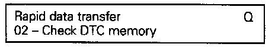

How to Read Diagnostic Trouble Codes (DTC's)
Refer to "Connection and Use of Test Equipment"Checking Diagnostic Trouble Code (DTC) Memory:
V.A.G. Display:
- Press buttons -0- and -2- to select "Check DTC memory" function 02.
V.A.G. Display:

- Press -PRINT- button.
- Press -Q- button to confirm input.
V.A.G. Display:
The number of stored Diagnostic Trouble Codes (DTCs) will be indicated
The stored malfunctions will be printed out one after the other.
- Use DTC printout and DTC table to repair malfunctions.
If "No DTC recognized" is displayed, pressing the -> button will return to the start of the Scan Tool program sequence.
V.A.G. Display:
V.A.G. Display:
If something else is displayed: check operating instructions of VAG 1551 Scan Tool.
- End Output (function 06).
- Switch ignition off and disconnect adapter harness VAG 1551/3.
NOTE:
If a malfunction was recognized:
- Repair cause of malfunction
- Check DTC memory (function 02)
- Erase DTC memory (function 05)